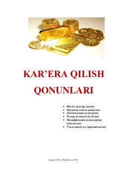

KQMuvaffaqiyatli karera qurish va boylikka erishishning 21 ta muhim siri va strategiyasi.
Ushbu kitob Brayan Treysining muvaffaqiyatga erishish va boylik orttirish haqidagi g'oyalari hamda strategiyalari asosida tuzilgan. Unda karera qilishning 21 ta asosiy siri, maqsad qo'yish va o'z-o'zini rivojlantirish bo'yicha amaliy maslahatlar berilgan.